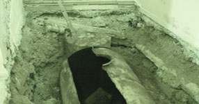
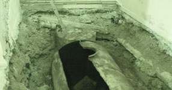
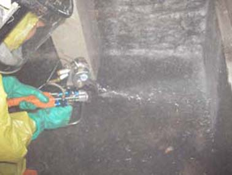
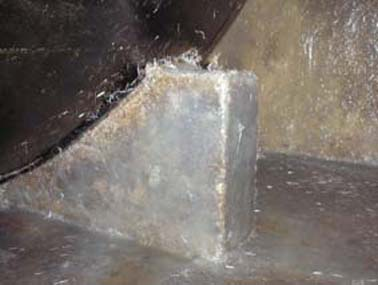

>Réservoir intérieur souple.
Ne risquez plus des déshordres environnementaux, mettez en conformité votre réservoir de stockage de fuel ou gasoil en le "doublant" avec un réservoir intérieur souple garanti 10 ans.
Nous travaillons en partenariat avec AFRISO EUROJAUGE : Lien vers AFRISO EUROJAUGE
Une législation pour les habitations et petits commerces: Arrêté du 1 juillet 2004
Une législation pour les ICPE (Installations Classées Pour l'Environnement) : Arrêté du 4 avril 2008
Installation d'un réservoir intérieur souple en images :

Après dégazage et dégraissage du réservoir, le réservoir est habillé intérieurement avec un feutre de protection, le trou d'homme est particulièrement soigné..

Le réservoir intérieur souple est déposé soignesement sur le fond.

Le réservoir intérieur souple est ensuite gonflé

Mise en place de la bride de maintien du réservoir intérieur souple.
Stratification intérieur d'un réservoir pour compenser une déterioration :

Démarrage de la stratifiaction du fond du réservoir.
Quand il n'est pas possible de rentrer dans la cuve, la rétention est étanchée par stratification:

L'opérateur en train de stratifier la rétention avec une projeuteuse simultanée, fibre (jet supérieur) + résine (jet inférieur).

Une fois stratifiées les paroies de la rétention sont étanche et accepte d'éventuelles fissurations de la maçonnerie.
Quand il n'est pas possible de rentrer dans la cuve, la rétention peut être étanchée avec un film PVC adapté.